Working with ZynAddSubFX
Copyright © 2008 D. Michael McIntyre
This tutorial was writting using Rosegarden 1.7.0-svn built from revision 8565.
ZynAddSubFX is a very cool and amazingly powerful software synth, but it is not remotely General MIDI compliant, and it requires much more manual control on the part of the user than most other soft synths or DSSI synth plugins. This tutorial is by no means a comprehensive treatise on ZynAddSubFX, but I hope it will serve as a useful walkthrough for the new user trying to figure out what to make of that thing from a Rosegarden perspective.
I assume you are running some studio-oriented distro like Studio..to go!, Ubuntu Studio, or 64Studio, and that you are running an appropriate realtime kernel, and have JACK working properly. If this is not the case, please turn to one of these studio distros for further assistance, as it is sensless agony in this day and age to try to get any of that working on a normal desktop- or server-oriented distro. (My list of three studio distros is by no means comprehensive, however, and I don't mean to exclude anyone. I simply haven't surveyed the entire field of studio-oriented distros. I use an Ubuntu Studio base with Kubuntu packages installed on top of it.)
Introducing Zyn
Your distro should have a ZynAddSubFX package (hereafter referred to as "Zyn") and the details of starting it will vary. If you have never run it before, it should look like this the first time (except hopefully with better fonts; sorry about that):
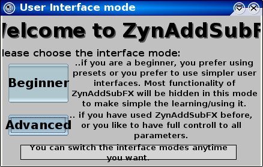
For our purposes here, we will use the beginner mode, so click that button, and the interface should look something like this:
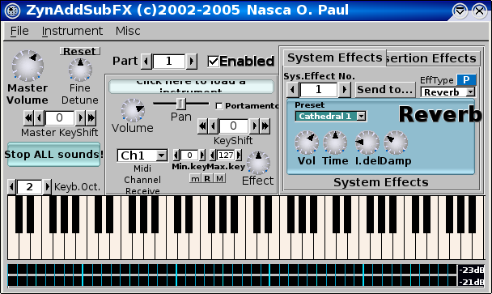
Have a look with QJackCtl's Connections button, and you should see that Zyn has hooked itself up automagically. Start Rosegarden and click the icon, and you should see that Rosegarden has found Zyn, and created a device for it:
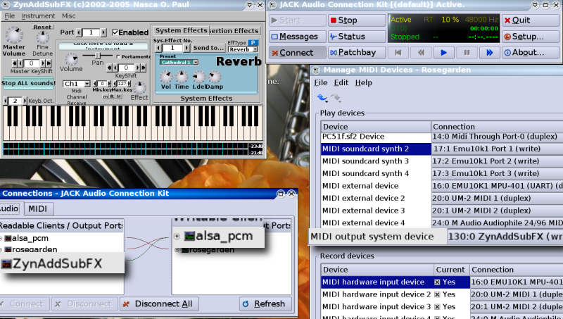
Next, we want to change "MIDI output system device" or whatever similarly useless name you have in front of you on your own screen into a memorable name. How about "ZynAddSubFX"? It doesn't really matter which entry on the left you match up with ZynAddSubFX on the right, and you can change any of these entries to satisfy this purpose. Double click on one of the labels, and type the new name, then scroll through the combo box on the right to pick Zyn out of the list if necessary (and I did have some annoying quirky bug problems trying to do this with my SVN example, but I couldn't actually repeat and therefore couldn't report any of the bugs; so if this happens to you, keep tinkering, and you'll get there):
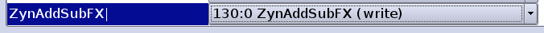
Now use the track parameters box in Rosegarden to assign track 1 to the new ZynAddSubFX device, instrument #1 (or right click on the track label, and use the assignment menus; whichever you find most convenient.)
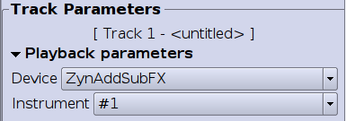
By default, Rosegarden instruments correspond with channels of the same number, so instrument #1 defaults to channel 1. This will be fine for our purposes. Now let's get Zyn to play something more interesting. I won't even try to tell you how to twiddle the real synth controls. Instead, we'll stick with its presets. The "Click here to load preset" button on my screen is totally illegible, but it's the blue bit here:
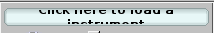
Which brings up this blank looking dialog:
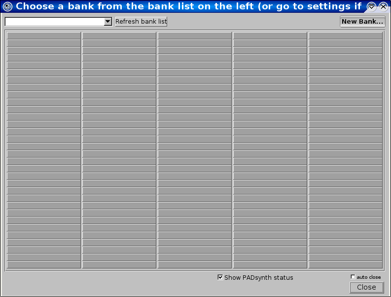
Now use the combo box to pick the Bass bank,
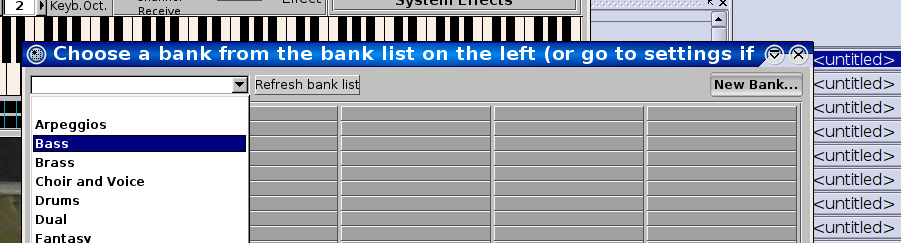
and then pick something. I picked "Analogue Bass."
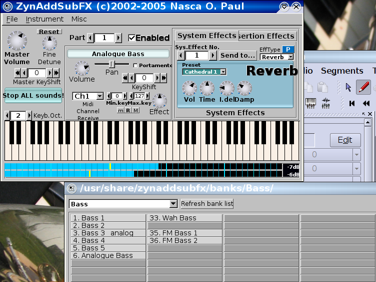
Now we can record or enter something in Rosegarden to play with this bass patch, such as this bit of classic bass riff:
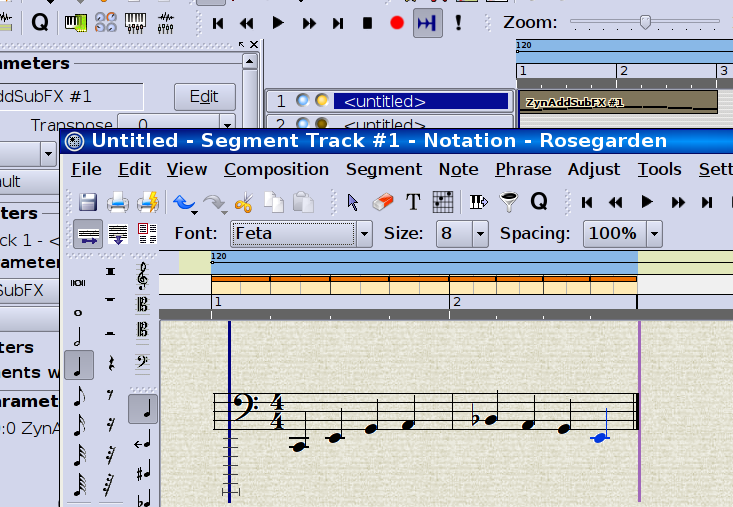
Now we want to enable another channel in Zyn, so find the Part controls, scroll to part 2, and check the Enabled box, then load another patch from the preset bank. I used "Trash Guitar 1:"
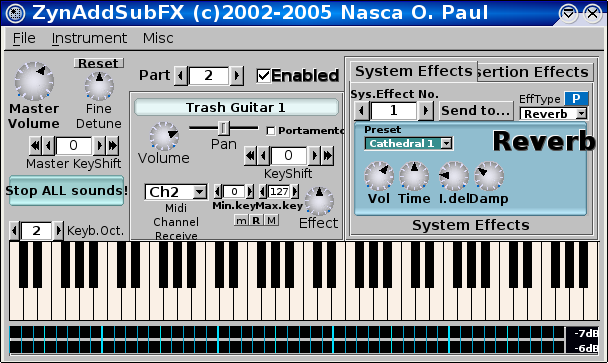
Repeat the assignment process for track 2, assigning it to ZynAddSubFx #2, and it might be useful at this point to label these tracks as well:
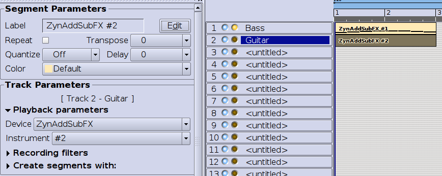
Throw something on this track too:
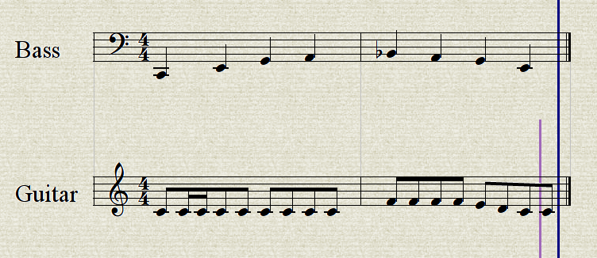
And now you have a taste of Zyn's polyphonic capabilities. I think this is very cool, and I have done entire compositions with Zyn as my only synth. Just for fun, let's add some drums, using Zyn's only preset synth drum kit on channel 3:
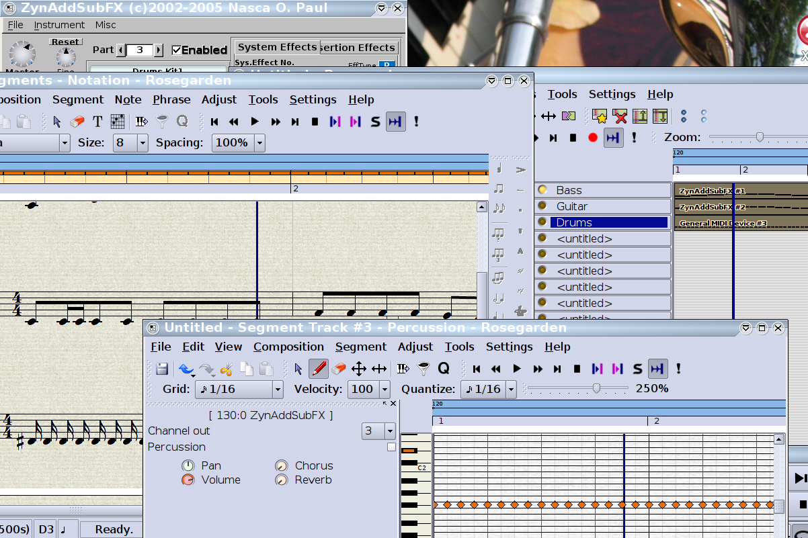
Finally, we want to share our little masterpiece with the world. Since Zyn doesn't know anything about program changes (or other controllers, as far as I can tell) that means some extra effort is involved in saving a copy of its state for another day. You want to go to Zyn's File -> Save All Parameters to create an .xmz file, then if you want to bundle it with your Rosegarden composition, you can create a Rosegarden Project Package, and include this .xmz file as an extra file.
First, create an .xmz file. Next, go to Rosegarden's File -> Export Rosegarden Project File and save it (for example) as a project of the same name as the .xmz file
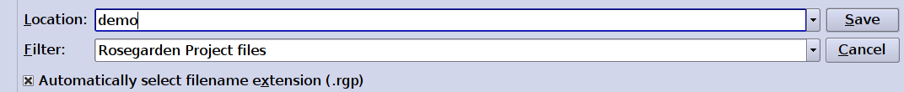
After a short bit of processing, the exporter will ask if you want to include any extra files:
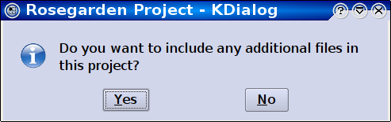
You should say yes, and then pick your .xmz file for inclusion:
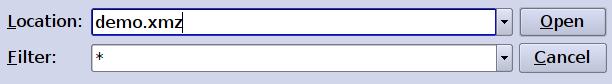
Answer no, you don't want to include any additional files, and let the packager continue.
Now you have an .rgp file that you can share with your friends. Unfortunately, they will have to unpack the package by hand to extract the .xmz file, and then load it into Zyn by hand. Unpacking in this fashion can currently only be accomplished from a command line, with something like "rosegarden-project-package --unpack demo.rgp" (which I won't get into in any detail in this tutorial.)
Here is the final result for you to play with, and here is the little composition I'm playing with at the moment, which uses Zyn along with live audio (and is nowhere near finished yet).
Good luck!